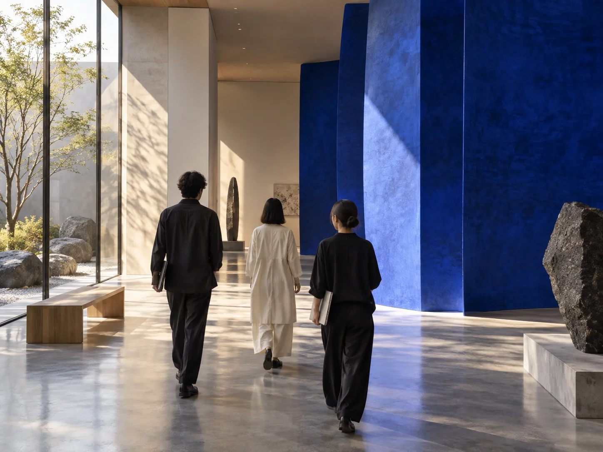
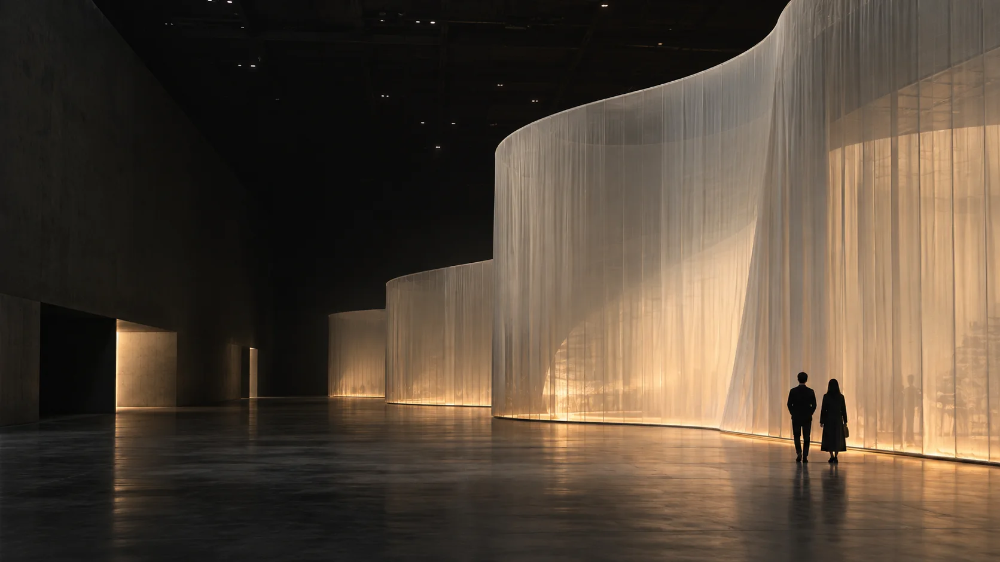

PEOPLE & ROLES / EDITORIAL CONCEPT
仕事の数だけ、
ものの見方がある。
5つの役割から、空間づくりを知る。
社員インタビューの構成を確認するためのサンプルです。
5件

PLANNINGプランナー / 構成案
まだない体験を、問いから。
↗ DESIGN
DESIGN空間デザイナー / 構成案
思い描いた世界を、空間に。
↗
DIRECTION制作ディレクター / 構成案
いくつもの専門を、ひとつに。
↗DIGITAL
体験デザイナー / 構成案
人の動きから、次を考える。
↗PRODUCTIONプロデューサー / 構成案